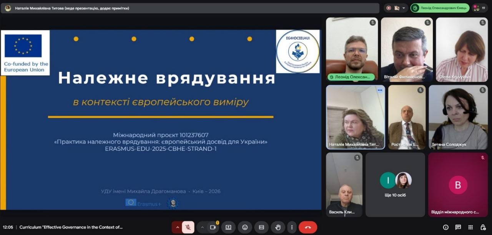
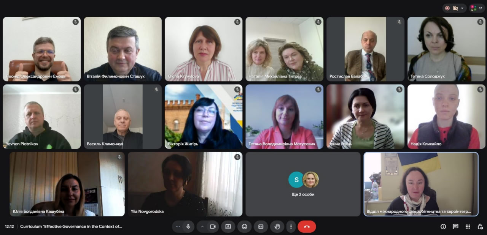
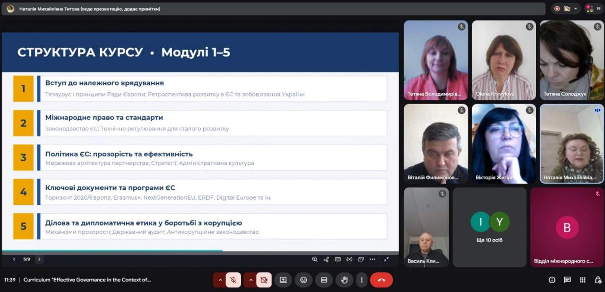

Публічне обговорення навчальної програми “Належне врядування в контексті європейського виміру”
27 березня 2026 року в межах реалізації міжнародного проєкту Erasmus+ № 101237607 — EG4HDCEEU4UI — ERASMUS-EDU-2025-CBHE «Практика належного врядування: Європейський досвід для України» відбулося публічне обговорення розробленої навчальної програми «Належне врядування в контексті європейського виміру» для підготовки здобувачів вищої освіти в українських партнерських університетах.

У заході взяли участь представники всіх партнерських організацій консорціуму проєкту та запрошені експерти. Під час зустрічі було представлено структуру, зміст та основні компоненти розробленої навчальної програми.

Презентацію програми здійснила проєктна команда університету-координатора у складі Сташука В.Ф., Рідей Н.М. та Титової Н.М., яка ознайомила учасників із ключовими цілями, тематичними модулями та очікуваними результатами навчання.

Учасники заходу обговорили зміст програми, її відповідність сучасним вимогам підготовки фахівців у сфері управління та адміністрування, а також можливості впровадження в освітній процес університетів-партнерів.
За результатами обговорення навчальну програму було погоджено, а також визначено подальші кроки щодо її впровадження в освітню діяльність українських закладів вищої освіти - партнерів проєкту.